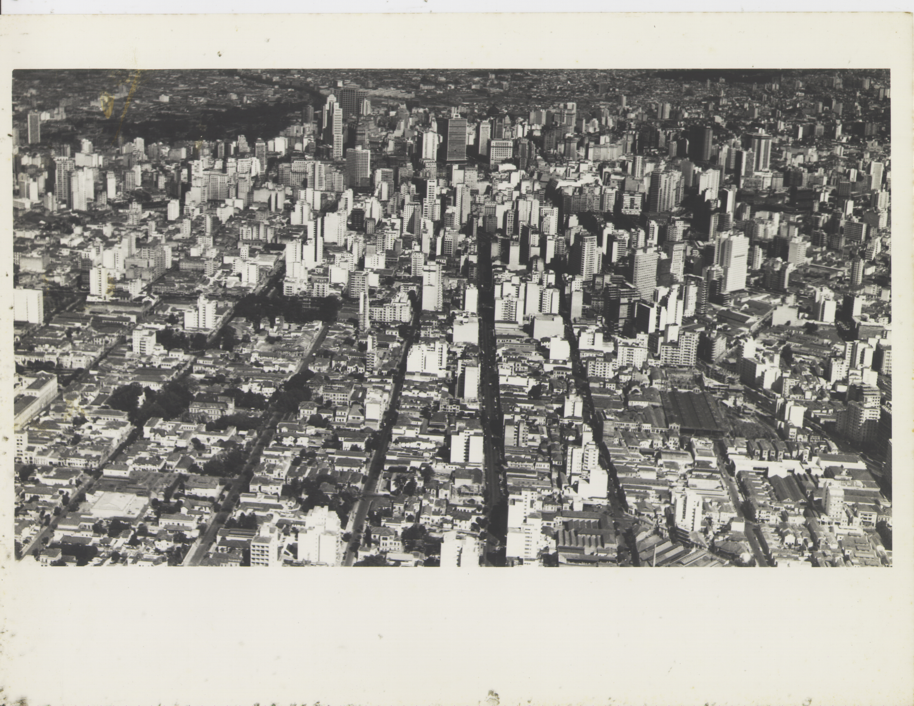
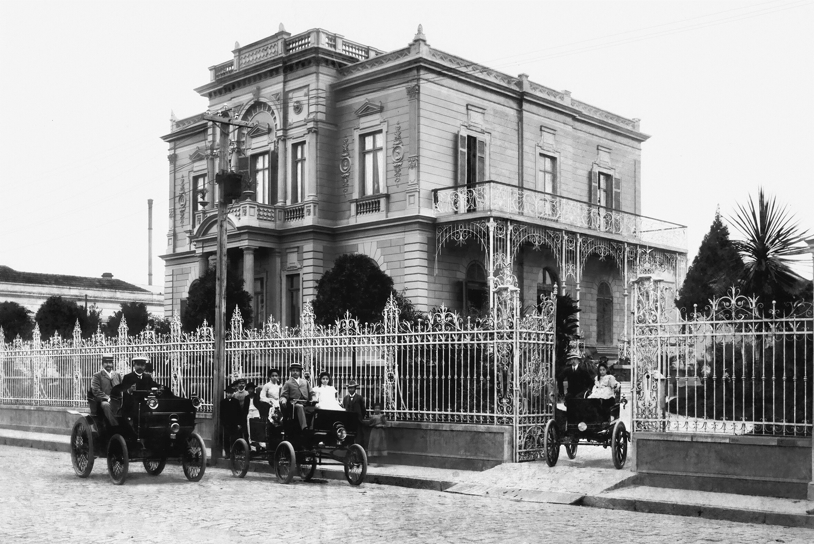
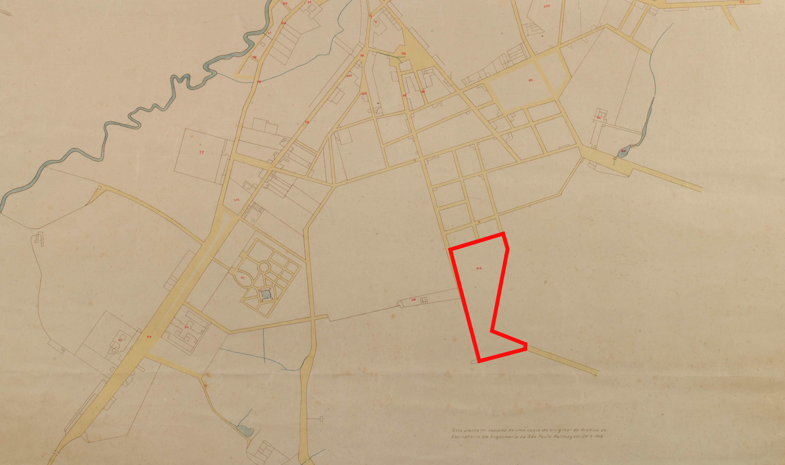

N.º 01 Café, casas e gente
Do que os Campos Elíseos se lembram?
Uma história de riqueza, trabalho e memória nos Campos Elíseos de São Paulo.
Um breve passeio! Fique com a gente!
Trabalho de AEX de "Café e Escravidão: uma história global", de Rafael Marquese, FFLCH-USP, Novembro de 2026.
Integrantes
Brendon Henrique dos Reis Silva · Vítor Hugo Oda Comparini · Nome do integrante 3
N.º 02 Café, casas e gente
Primeiras impressões.
Antes de passearmos pelos Campos, queremos saber como você imagina esse lugar. São só três perguntinhas. Não se preocupe, escreva o que vier à sua cabeça!

N.º 03 Café, casas e gente
PERGUNTA 01 / 03
Que tipo de pessoa mora aqui?

Responda com suas próprias palavras para avançar. Não precisa acertar.
Escreva uma resposta antes de continuar.
N.º 04 Café, casas e gente
RECONHECIMENTO DE 'CAMPOS'
Legal saber o que você imaginou! Agora, conheça o bairro coma a gente:
Caso você não conheça, Campos Elíseos é um bairro localizado no centro de São Paulo. E para um visitante desavisado pode ser só isso mesmo; já que se integra bem com a paisagem do restante da região central da cidade. Mas o que investigamos nesse passeio é a origem do bairro, ligada a um momento de expansão da economia global do café no interior do estado, que gerou um “boom” urbano na capital, atraindo a elite cafeeira para morar em um bairro planejado e moderno.
Mas o que queremos discutir é tudo aquilo que as fachadas dos palacetes de Campos Elíseos esquecem de contar para quem visita hoje o bairro.
Desça e clique em 'Continuar'.
